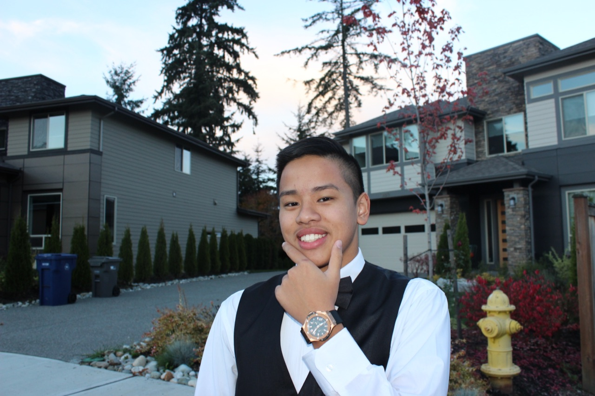

This is a recent picture of me, and yes, before you say anything, I am very hot. Thank You! In this website, you will read all about me.
I am 15 years old and am a 9th grader. I was born on November 28, 2001. I like to do many things and I may not be the normal guy you think I would be
This is currently my favorite song. If you give it a listen, it can really get you dancing. It is a recent song by Kendrick Lamarand I can't stop moving everytime I listen to this
There are other things I like and don't like. Instead of giving you a long list, here's an organized table.
| Food | Sports | Shows | Dog Breeds |
|---|---|---|---|
| Fried Rice | Volleyball | Grey's Anatomy | Golden Retriever |
| Pho | Basketball | Nikita | Border Collie |
| Pasta (all kinds) | Football | The 100 | Pyranees |
| Pad Thai | Tennis | 13 Reasons Why | Husky |
Family is one of the most important things to me. Everything I do is with them or because of them. They are the ones who have made me who I am and I will always keep them in my heart
I'm gonna tell you about my family, excluding the extended family
My mom, Phuong Dang
My dad, An Nguyen
My sister, Emily Nguyen
My other sister, Isabella Nguyen
These are the people I am with everyday and I don't have any regrets. Because of them, I am who I am
As a Freshman, school is something that is a big part of my life and I dedicate a lot of my time puting effort into my school work.
Here is my schedule for this semester